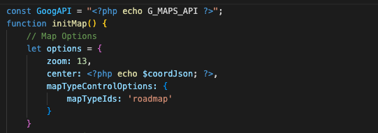

Google Maps API:
Using the Google Maps documentation to initialise and configure our map
Full Google Maps documentation can be found here.
The map is initialised in the cities.php file
Initialising the map
First, we need to initalise the map to add content and append markers to it. A constant 'GoogAPI' is declared in Javascript, to store the API value from the configuration file. 'GoogAPI' is required to allow the API key to be used in Javascript.
The whole map is wrapped in the initMap() function.

We create an object for the map options, to determine it is displayed. During implementation we chose 'zoom:12' , but the zoom can be changed to liking.
The center of the map takes in a JSON encoded version of the places and co-ordinates, to create a dynamic center of the map.
Creating map instance and adding markers
We then create a new map instance, also passing in the options object as an argument to render the map.
The var 'places' uses the JSON encoded version of places.
A 'for' loop is used to loop through all the places to call the addMarker function to add markers onto the map.
The 'var map' selects the div in the HTML with 'id=map' using 'document.getElementById'. The map will be displayed in this divider.
Add markers function
To add markers for our points of interest, a javascript function is used called addMarkers.
Passing in 'place' argument - which will be used to pass in the 'places' variable. (See next section)
Inside the function is a variable 'marker' which will be used for each individual point of interest.
Options are passed into the marker variable using the .Marker method from the Google Maps API.
The 'if (place[3])' checks the validation of content, to ensure all data is correct.
Each marker has an event listener, using '.addListener' to add functionality when a user hovers in and out on a marker, which will then display information about each marker. Upon click, the URL of the website changes to display photos and information about each marker.
Points of interest
The points of interest were chosen by the team, trying to find the most unique places for each city.
The points of interest can be found in the configuration file.
Points of interest are found in the '$placesJson' variable - which calls the $cities array which holds arrays for both Edinburgh and Munich.
The traversal of the $cities array can be done after the right city is retrieved using the $_REQUEST method. After this, places can be found using $cities[$city]['places'];


.png)

.png)